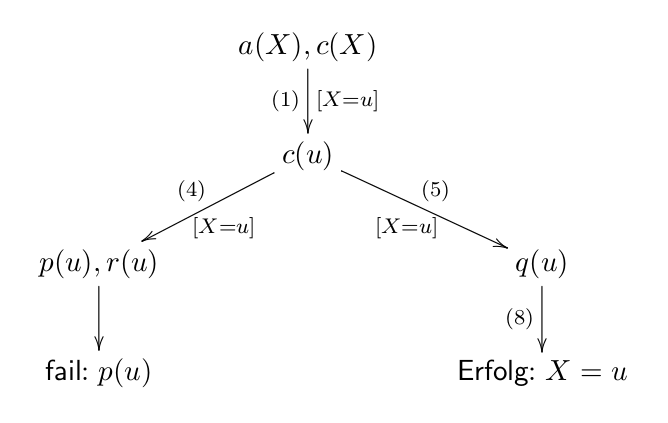
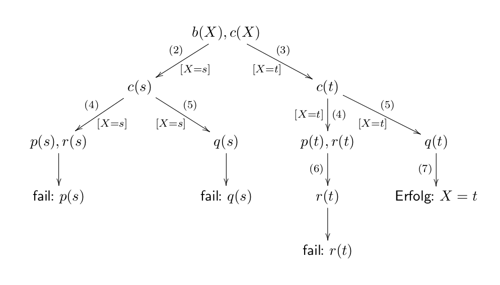

Falco Nogatz
Lehrstuhl für Informatik I
falco.nogatz@uni-wuerzburg.de
Raum E34
Termin nach Absprache
Lehrstuhl für Informatik I
falco.nogatz@uni-wuerzburg.de
Raum E34
Termin nach Absprache
public static void quicksort(int liste[], int links, int rechts) {
if (links < rechts) {
int i = links;
int j = rechts-1;
int pivot = liste[rechts];
while (i <= j) {
while ((liste[i] <= pivot) && (i < rechts)) i++;
while ((liste[j] >= pivot) && (j > links)) j--;
if (i < j) {
int swap = liste[i];
liste[i] = liste[j];
liste[j] = swap;
}
}
if (liste[i] > pivot) {
liste[rechts] = liste[i];
liste[i] = pivot;
}
quicksort(liste, links, i-1);
quicksort(liste, i+1, rechts);
}
Anders als in imperativen Programmiersprachen stehen Variablen nicht für Speicherplätze, sondern sind Platzhalter für genau einen Wert. Sie können, einmal gebunden, keinen anderen Wert mehr annehmen.
F = ∃ X (X = 1 ∧ X = 2)
⇒ F = ⊥
Gebundene Variablen lassen sich nicht (ohne weiteres) vom konkreten Wert, für den sie stehen, unterscheiden.
% beginnen mit einem Großbuchstaben X, Y, Mensch, Hochschule, ... % oder beginnen mit einem Unterstrich _mensch, _Hochschule, ... % oder sind anonym _
?- X = 1. X = 1. ?- X = 1, Y = 2. X = 1, Y = 2. ?- X = 1, X = 2. false.
% fangen mit kleinem Buchstaben an otto, karl, mensch, person_, uni_mensa % oder sind in Hochkommata eingeschlossen 'Otto', 'Karl', 'Mensch', 'Person', 'Uni-Mensa' % oder sind Zahlen 1, 2.3, -5
% bestehen aus Funktionssymbol und Argumenten name(k1, k2, ..., kn) % sind charakterisiert durch Namen und Anzahl der Argumente name/n % "Funktor" % können geschachtelt und mit unterschiedlichen Stelligkeiten % definiert werden
?- X = ist_toll(prolog). X = ist_toll(prolog). ?- X = writeln(hello). X = writeln(hello). ?- X = 4/5. X = 4/5. ?- X = /(4,5). X = 4/5.
"Gleichmachen von Termen": Zwei Terme sind unifizierbar, wenn sie entweder gleich sind, oder durch Bindung von Variablen gleich gemacht werden können.
Dabei sind folgende Regeln zu beachten:
Unifikation geschieht über den "=" Operator.
?- foo(X,b) = foo(a,Y). X = a, Y = b. ?- plus(1,2,N). N = 3. ?- foo(plus(1,2)) = foo(N). false.
Welche Typen werden in Prolog unterschieden?
Keine Typisierung in Prolog!
[]
[1,2,3,4]
[X|Xs], [A,B|Rest]
(1,2,'c')
zahlenpaar(1,1)
?- [X,b] = [a,Y]. X = a, Y = b. ?- [X|Y] = [a,b]. X = a, Y = [b]. ?- [A, f(x,y)|R] = [f(R), B]. A = f(R), B = f(x,y), R = [].
+, -, *, /, //, mod
^ und **
=:=, =\=, <, >, =<, >=
isArithmetische Variablenbindungen werden in Prolog mit is durchgeführt statt =. Warum?
?- X = 4/5, X =:= 0.8. true. ?- X = 4/5, X = 0.8. false. ?- X is 4/5, X = 0.8. true.
?- ...Beispiele:
mensch(falco). mensch(sandra). freunde(falco, sandra). freunde(sandra, falco). prolog_ist_toll. laenge([X], 1).
laenge([X], 1).
∀ X laenge([X],1)
kopf/n :- rumpf1, ..., rumpfn.
elternteil(X,Y) :- kind(Y,X). kind(X,Y) :- elternteil (Y,X).
Beispiele:
freund(X,Y) :- freund(Y,X). % wird Problem bei Abfrage von freund(A,B). grossvater(X,Y) :- mutter(X,M), vater(M,Y). grossvater(X,Y) :- vater(X,V), vater(V,Y). laenge([X|Xs],L) :- laenge(Xs,S), L is S+1.
laenge([X|Xs],L) :- laenge(Xs,S), L is S+1.
∀ X ∀ Xs ∀ L (laenge([X|Xs],L) ← ∃ S (laenge(Xs,S) ∧ L = S+1))
Gegeben sei folgendes Prolog-Programm:
(1) a(u). (2) b(s). (3) b(t). (4) c(X) :- p(X),r(X). (5) c(X) :- q(X). (6) p(t). (7) q(t). (8) q(u). (9) r(s).
Anfragen:
?- a(X),c(X).?- b(X),c(X).(1) a(u). (2) b(s). (3) b(t). (4) c(X) :- p(X),r(X). (5) c(X) :- q(X). (6) p(t). (7) q(t). (8) q(u). (9) r(s).
?- a(X),c(X).

?- b(X),c(X).
drei_wuerfe(A,B,C) :- (A = kopf ; A = zahl), (B = kopf ; B = zahl), (C = kopf ; C = zahl).
?- drei_wuerfe(A, B, C). A = B, B = C, C = kopf ; A = B, B = kopf, C = zahl ; A = C, C = kopf, B = zahl ; A = kopf, B = C, C = zahl ; A = zahl, B = C, C = kopf ; A = C, C = zahl, B = kopf ; A = B, B = zahl, C = kopf ; A = B, B = C, C = zahl.
drei_wuerfe(A,B,C) :- (A = kopf ; A = zahl), (B = kopf ; B = zahl), !, (C = kopf ; C = zahl).
?- drei_wuerfe(A, B, C). A = B, B = C, C = kopf ; A = B, B = kopf, C = zahl.
drei_wuerfe(A,B,C) :- (A = kopf ; A = zahl), !, (B = kopf ; B = zahl), (C = kopf ; C = zahl).
?- drei_wuerfe(A, B, C). A = B, B = C, C = kopf ; A = B, B = kopf, C = zahl ; A = C, C = kopf, B = zahl ; A = kopf, B = C, C = zahl.
\+(member(1,[2,3,4])) % true
write('Hello '), write(Name), write('!').
write('Hello '), write(Name), write('!'), nl,
write('Alles klar?').
trace, length([1,2,3],R).
guitracer, trace, length([1,2,3],R).
nodebug.
?- ask(Question,Answer).
 This presentation is licensed under the
This presentation is licensed under the
Creative Commons Attribution 4.0 International
license.